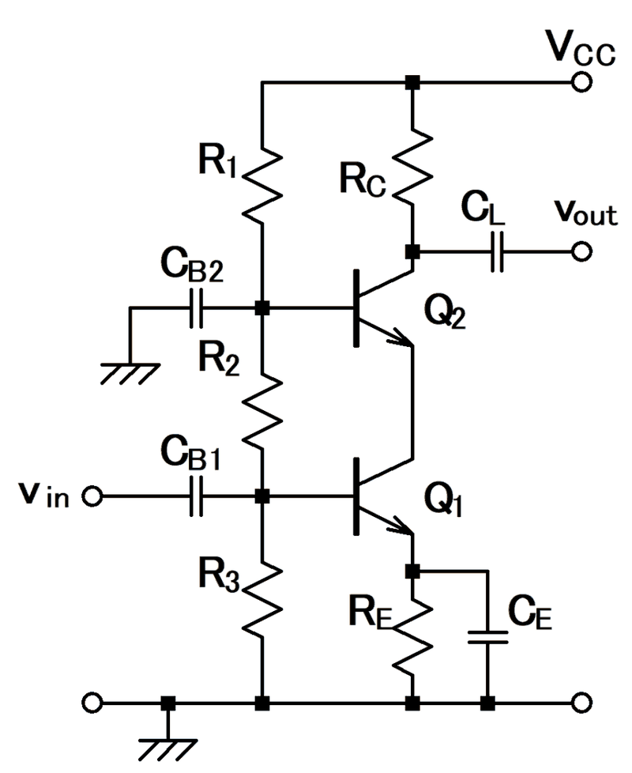

캐스코드 증폭기 (Cascode Amplifier)

원문 설명: トランジスタによるカスコード増幅回路例 → 트랜지스터로 구성한 캐스코드 증폭 회로의 예
그림은 BJT(Q1·Q2), 본문은 MOSFET(M1·M2) 기준이다. Q1 ↔ M1, Q2 ↔ M2.
| # | 원문 | 한국어 | 설명 |
|---|---|---|---|
| 1 | VCC | 전원 전압 | 직류 전원 전압. 바이어스 회로가 이 전압에서 동작점을 만든다 |
| 2 | R1, R2, R3 | 저항(분압) | 전압 분배 바이어스. 분배 전류가 베이스 전류보다 충분히 크면 베이스 전압을 고정한다 |
| 3 | RC | 컬렉터 저항 | 컬렉터 저항. 베이스 쪽 저항과 함께 트랜지스터의 동작점(Vce, Ic)을 정한다 |
| 4 | CL, vout | 출력 결합 커패시터, 출력 전압 | 결합 커패시터. 신호의 교류 성분만 통과시키고 직류는 막는다 |
| 5 | Q2 | 위쪽 트랜지스터(공통베이스단) — 본문의 M2 | 아래 단의 전류를 출력으로 전달한다. BJT 캐스코드는 공통이미터단이 공통베이스단을 구동하는 구조 |
| 6 | CB2 | 베이스 커패시터 | Q2 베이스와 접지 사이. 큰 커패시터는 관심 주파수에서 단락으로 본다 |
| 7 | CB1, vin | 입력 결합 커패시터, 입력 전압 | 결합 커패시터. 직류를 막아 입력이 바이어스를 흐트러뜨리지 않게 한다 |
| 8 | Q1 | 아래쪽 트랜지스터(공통이미터단) — 본문의 M1 | 입력을 받는 단. BJT 캐스코드는 공통이미터단이 공통베이스단을 구동하는 구조 |
| 9 | RE, CE | 이미터 저항, 이미터 바이패스 커패시터 | 이미터 저항은 동작점을 안정시키고, 병렬 바이패스 커패시터는 교류 이득 저하를 막는다 |
쉽게 풀면
트랜지스터 하나로 증폭하면 입력과 출력 사이에 있는 작은 기생 커패시터가 이득만큼 부풀려 보이는 현상 때문에 고주파 특성이 나빠진다. 캐스코드는 증폭 트랜지스터의 출력 위에 전압 완충 역할을 하는 트랜지스터를 한 층 더 얹어, 아래 트랜지스터가 보는 출력 전압 변화를 아주 작게 눌러 준다. 그 결과 기생 커패시터가 부풀려지지 않아 대역폭이 넓어지고, 동시에 출력 저항이 커져 직류 이득도 높아진다.
왜 중요한가
집적회로용 증폭기에서 이득과 대역폭은 보통 맞바꿔야 하는 관계인데, 캐스코드는 이 상충을 상당히 완화해 준다. 그래서 연산증폭기의 이득단, 저잡음 증폭기의 입력단, 전류 거울의 출력단 등 성능이 중요한 자리에 거의 기본으로 채택된다. 회로 논문에서 텔레스코픽이나 폴디드라는 수식어가 붙은 구조도 모두 이 개념의 변형이다.
핵심 정리
- 캐스코드는 입력을 받는 공통소스(또는 공통에미터) 트랜지스터 M1 위에 공통게이트(공통베이스) 트랜지스터 M2를 쌓은 구조이다. M2의 게이트는 직류 바이어스에 두고 출력은 M2 드레인에서 얻는다.
- M2는 M1의 전류를 그대로 출력으로 전달하면서 M1 드레인 전압을 거의 고정한다. 그 결과 M1이 보는 부하 임피던스가 작아져 M1의 이득이 낮아지고, 대신 출력 저항이 gm2ro2ro1 정도로 커진다.
- (1) 출력 저항이 커서 전압 이득이 크고, (2) M1의 게이트-드레인 용량에 대한 밀러 효과가 줄어 대역폭이 넓어진다(Razavi, 2017; Sedra & Smith, 2015).
- 비용으로 전압 여유(헤드룸)가 줄어든다. 출력 전압 범위가 줄어드는 단점은 폴디드 캐스코드 같은 변형으로 완화한다.
- 이름은 Hunt와 Hickman(1939)의 진공관 회로에서 비롯된 것으로 알려져 있다.
밀러 효과에서는 BJT 증폭단의 귀환 용량이 단 이득만큼 곱해져서, 예컨대 1.0 pF 귀환 용량과 전압 이득 50이면 유효 입력 용량이 약 51 pF이 된다. 캐스코드는 출력에서 입력으로의 직접 결합을 없애 이 효과를 크게 줄이고, 위쪽 소자가 아래쪽 소자의 드레인 전압을 거의 일정하게 붙들어 아래쪽 소자가 전압 이득을 거의 보지 못한다. 같은 이득에서 단일 트랜지스터 증폭기보다 훨씬 넓은 대역폭을 얻으므로 CRT 모니터의 영상 증폭기에 선호되었다(영상 대역폭은 PAL 약 5 MHz부터 VGA 86 MHz 이상).
예시로 보기
가상의 예: gm = 2 mS, ro = 50 kΩ인 트랜지스터를 쓰면 단일 공통소스단의 최대 이득은 gmro = 100이다. 전류원 부하의 출력 저항이 캐스코드와 같은 수준으로 높다고 가정하면 캐스코드의 이득은 약 (gmro)² = 10,000으로 커진다. 실제로는 부하의 출력 저항이 이득을 제한한다.
밀러 효과도 비교할 수 있다. 단일 공통소스단의 이득이 −20이면 게이트-드레인 용량이 입력에서 (1 + 20) = 21배로 보이지만, 캐스코드에서는 M1의 이득 크기가 약 1이어서 약 2배로 보인다. 입력 쪽 시정수가 줄어 고주파 응답이 좋아진다.
MOSFET 캐스코드의 입력 저항은 저주파에서 무한대이고 BJT 캐스코드는 두 번째 트랜지스터의 r_π2와 같다. 부하 저항이 낮으면 캐스코드의 이득은 줄어 단일 트랜지스터와 같아진다. MOSFET 집적회로에서는 전류거울을 캐스코드화해 전류원의 출력 임피던스를 높인다.
자주 하는 오해
| 오해 | 바로잡기 |
|---|---|
| 캐스코드는 이득과 대역폭을 모두 공짜로 올린다. | 전압 여유가 줄고 소자와 바이어스가 더 필요하다. |
| 캐스코드의 이득은 항상 (gmro)²이다. | 이는 부하 출력 저항이 매우 높을 때의 상한이며, 실제 이득은 부하에 의해 제한된다. |
| M2가 신호 전류를 더 증폭한다. | M2는 M1의 전류를 거의 그대로(전류 이득 약 1) 전달한다. 전달컨덕턴스는 M1이 정하고, M2는 출력 저항을 키우고 M1의 드레인 전압 변화를 줄여 전압 이득과 대역폭에 기여한다. |
이름은 1939년 프레더릭 헌트와 로저 히크먼이 전압 안정기에 관한 글에서 붙였으며, 펜토드 대신 직렬 연결한 두 3극관을 제안했는데 단일 펜토드보다 잡음이 낮았다. 초기 텔레비전 튜너가 낮은 잡음과 넓은 대역폭 때문에 캐스코드를 썼고, 1960년대에는 MOS 테트로드를 두 개의 합쳐진 MOS 3극관의 캐스코드로 분석해 200 MHz 이상에서 동작시켰다.
논문에서는 이렇게 쓰입니다
실제 논문에서
이 용어를 직접 쓴 국내 논문 문장은 아직 모으지 못했다. 모이는 대로 출처와 함께 싣는다.
예시 문장
아래 예문은 용어의 쓰임을 보이려고 만든 것으로, 실제 논문 문장이 아니다.
전압 여유가 부족한 저전압 공정에서 캐스코드의 장점을 살리기 위해 변형 구조를 쓴 사례이다.
이 때문에 무선주파수 회로나 고속 아날로그 회로에서 대역폭 확장이 필요한 경우에 자주 채택되는 구조로 다루어진다.
조금 더 깊게 보면
공통소스단은 전압 이득을 담당하고 공통게이트단은 전류를 그대로 받아 출력으로 전달하면서 아래 소자의 드레인 전압을 거의 고정시킨다. 전체 출력 저항은 두 트랜지스터의 출력 저항과 위 트랜지스터의 트랜스컨덕턴스의 곱에 가까워져 단일단보다 훨씬 커지고, 이득도 그만큼 높아진다.
다만 두 소자를 수직으로 쌓으므로 필요한 전압 여유가 늘어나는데, 이를 피하려고 위 단을 반대 극성 소자로 접어 배치하는 폴디드 캐스코드가 저전압 공정에서 널리 쓰인다.
주의할 점
캐스코드는 이득을 높이지만 출력 전압이 움직일 수 있는 범위를 좁히므로, 공급 전압이 낮은 최신 공정에서는 그 대가가 크다. 공통소스 증폭기가 기본 증폭단 자체를 가리키는 데 비해, 이 항목은 그 위에 한 단을 더 쌓은 조합 구조를 가리킨다.
헷갈리기 쉬운 용어
증폭기 구조 용어이다.
| 용어 | 구성 | 특징 |
|---|---|---|
| 공통소스 증폭기 | 트랜지스터 한 개 | 이득은 g<sub>m</sub>r<sub>o</sub> 이하, 밀러 효과 큼 |
| 캐스코드 증폭기 | 공통소스 + 공통게이트 | 출력 저항·이득 큼, 밀러 효과 작음, 헤드룸 감소 |
참고 문헌
- Razavi, B. (2017). Design of Analog CMOS Integrated Circuits (2nd ed.). McGraw-Hill Education.
- Sedra, A. S., & Smith, K. C. (2015). Microelectronic Circuits (7th ed.). Oxford University Press.
- Gray, P. R., Hurst, P. J., Lewis, S. H., & Meyer, R. G. (2009). Analysis and Design of Analog Integrated Circuits (5th ed.). Wiley.
- Hunt, F. V., & Hickman, R. W. (1939). On electronic voltage stabilizers. Review of Scientific Instruments, 10(1), 6–21.
- Wikipedia contributors (n.d.). Cascode. Wikipedia.
표의 기준값은 위 문헌에 따른 관례이고, 분야·학술지마다 기준이 다를 수 있다.